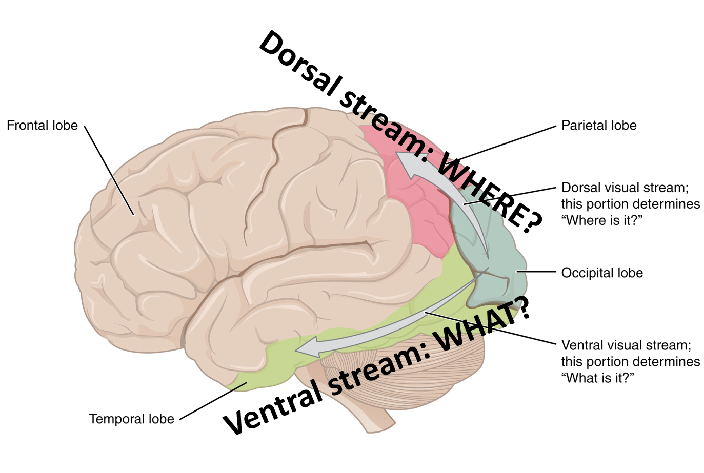
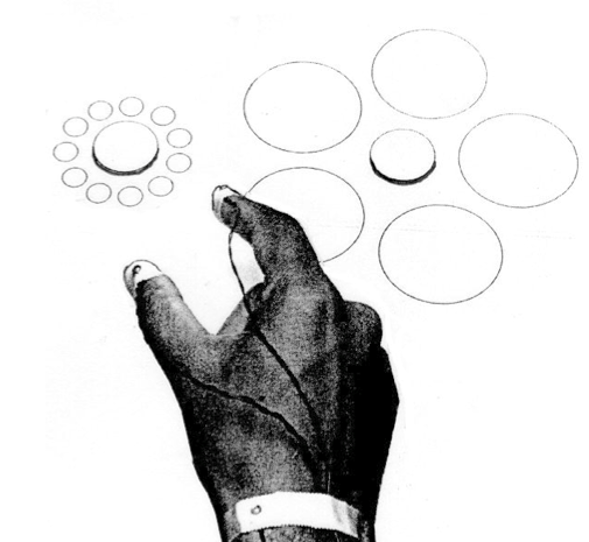
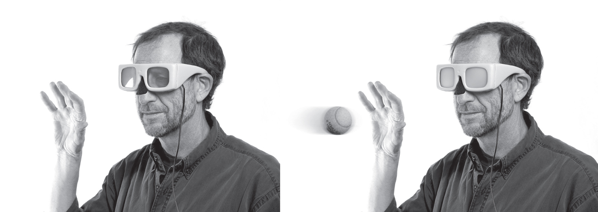
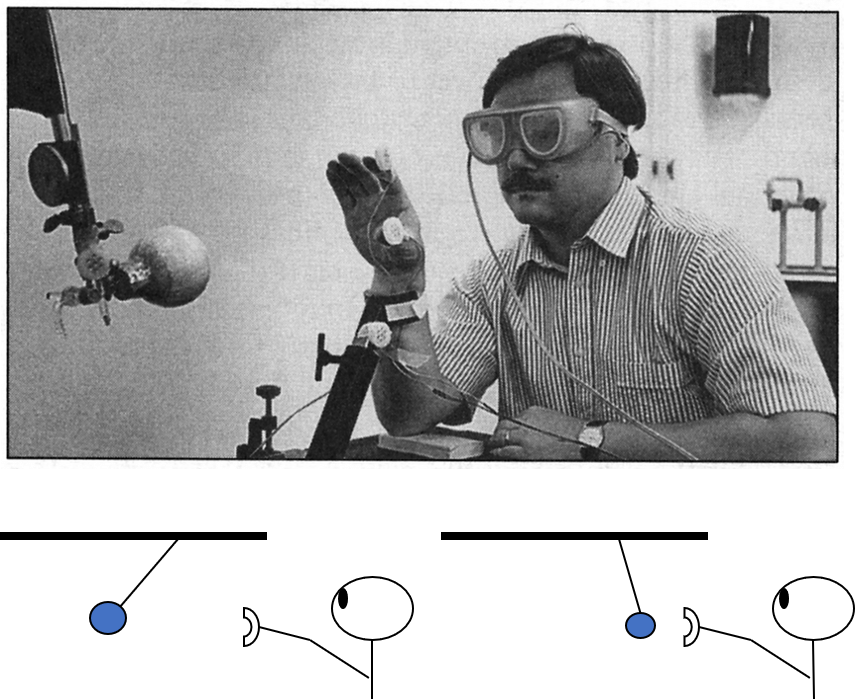
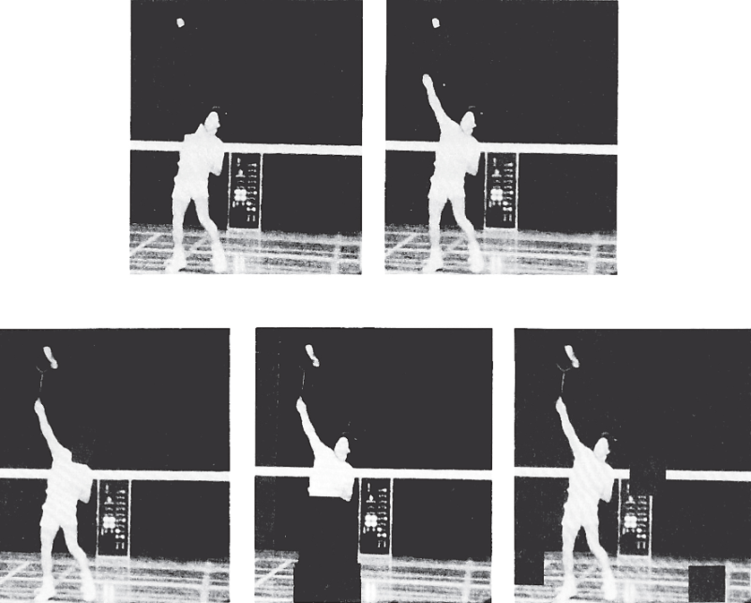
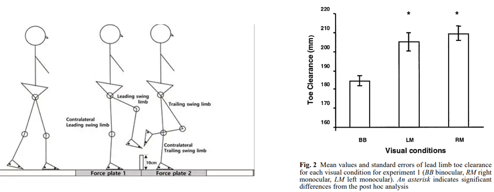

Two Visual Systems & How We Study Vision’s Role
Your brain uses vision in two very different ways — one to recognize the world, another to act in it. This lesson introduces that split and the clever experiments that pull the two apart.
These interactive lessons were built by Dr. Kuznetsov using AI tools, with extensive input from and review by the instructor, who is responsible for their content and accuracy.
The Two Visual Systems model
Vision isn’t one system but two. Milner and Goodale’s Two Visual Systems model (Milner & Goodale, 1992) proposes that after the retina, visual information splits into two cortical streams that do different jobs. One lets you recognize and describe what you see; the other guides your movements toward it — often without you being aware of it.

Flip each card to compare the two streams.
Milner, A. D., & Goodale, M. A. (1992). Separate visual pathways for perception and action. Trends in Neurosciences, 15(1), 20–25. · See also Kandel, E. R., Schwartz, J. H., Jessell, T. M., Siegelbaum, S. A., & Hudspeth, A. J. (Eds.). Principles of Neural Science (5th ed.). McGraw Hill.
When one stream is damaged
Milner and Goodale built their model on two kinds of evidence: clinical evidence from brain-damaged patients (this page) and experimental evidence from illusions in healthy people (next page). The clinical case is a double dissociation — damage to one stream knocks out its job while leaving the other’s intact.
Flip each lobe to see what its damage does.
With damage to the temporal (ventral) pathway, patients can show blindsight: awareness of single visual features such as edges and motion, but no holistic visual percept — they report seeing “nothing,” yet reach or point at above-chance accuracy. This suggests perceptual awareness is modular, and that a normal binding process that unifies the features into a whole percept is interrupted.
Derrien, D., Garric, C., Sergent, C., & Chokron, S. (2022). The nature of blindsight: implications for current theories of consciousness. Neuroscience of Consciousness, 2022(1), niab043.
Fools the eye, not the hand
Here’s a second way to demonstrate the operation of the two streams. The Ebbinghaus illusion: a circle ringed by large shapes looks smaller than the same circle ringed by small shapes.
Now the key study. Aglioti et al. (1995) built a physical version of the illusion and had people reach out and pick up the center disc with thumb and forefinger, while the opening of their grip was measured.

Source: Aglioti, DeSouza & Goodale (1995), Current Biology, 5(6), 679–685.
What do you think? As the hand reached to grasp, did people open their finger grip to match what they perceived (the illusion), or to the real size of the center disc? Predict, then flip:
Aglioti, S., DeSouza, J. F. X., & Goodale, M. A. (1995). Size-contrast illusions deceive the eye but not the hand. Current Biology, 5(6), 679–685.
We’ve seen that vision splits into two systems. Next we turn to how motor-control researchers actually study vision for movement — starting with occlusion methods that remove vision at precise moments (temporal occlusion) or hide specific parts of a scene (event occlusion).
Temporal occlusion: when do you need to see?
To find out when during a movement vision matters, researchers take it away at precise moments. There are two ways to do it:
Occlusion spectacles
Specially designed goggles whose lenses switch from clear to opaque on cue — vision is removed live, during the action.
Editing the video
Stop (or cut) a video recording at various times, so the viewer sees only up to a chosen moment.
The classic goggles are the PLATO (Portable Liquid-crystal Apparatus for Tachistoscopic Occlusion), whose lenses turn opaque in milliseconds, on cue.

Source: liquid-crystal occlusion goggles, after Milgram (PLATO), Translucent Technologies Inc.
Researchers used exactly this tool to find out how late you can still see the ball and make the catch. Let’s look at the study.
Catching in the dark
Savelsbergh et al. (1993) used occlusion goggles to pin down when vision is needed to catch. Participants caught a glowing ball swinging on a pendulum in a dark room, and the goggles blacked out at different moments before contact.

Source: Savelsbergh, Whiting, Pijpers & Van Santvoord (1993), Experimental Brain Research, 93(1), 148–156.
The goggles blacked out 0, 100, 200, or 300 ms before the ball reached the hand — so some catches had full vision, others lost sight of the ball at the last moment.
Predict: which blackout time hurt catching the most — and what did people do to cope? Flip:
Savelsbergh, G. J. P., Whiting, H. T. A., Pijpers, J. R., & Van Santvoord, A. A. M. (1993). The visual guidance of catching. Experimental Brain Research, 93(1), 148–156.
Event occlusion: what do you look at?
Temporal occlusion asks when vision matters. Event occlusion asks what part of the scene carries the information — by editing a video to hide a specific feature and seeing whether people can still predict what happens.

Source: Abernethy & Russell (1987), Journal of Sport Psychology, 9(4), 326–345.
If hiding a feature wrecks your prediction, that feature was carrying the visual information you rely on. This is how researchers find the cues performers actually use.
So which feature mattered? Predict which mask hurt prediction most, then flip:
Abernethy, B., & Russell, D. G. (1987). Expert-novice differences in an applied selective attention task. Journal of Sport Psychology, 9(4), 326–345.
One eye or two?
Two eyes give you binocular vision — and with it, depth perception. With one eye closed you’re left with monocular vision. Here’s a quick way to feel what monocular viewing costs you.
- 1Hold a pen or pencil in each hand, arms out, elbows slightly bent.
- 2Close one eye. Try to bring the two tips together so they touch, in one smooth move.
- 3Now do it with both eyes open. Notice the difference.
Was it harder with one eye? What made the two-eyes version easier? Jot down a sentence or two.
Saved only in your browser, just for you. Jot something down, then continue.
What binocular vision buys you
Depth from two eyes isn’t just for party tricks — it sharpens real motor tasks: reaching and grasping, moving through cluttered spaces, and intercepting moving objects. Two findings show what happens when you take one eye away. Predict each result, then flip.
Coull et al. (2000) — reaching
Patla et al. (2002) — stepping over obstacles

Source: Patla, Niechwiej, Racco & Goodale (2002), Experimental Brain Research, 142(4), 551–561.
Lose binocular depth and the motor system gets conservative: it undershoots reaches and over-clears obstacles. Depth perception from two eyes makes guided action more accurate and confident.
Coull, J., Weir, P. L., Tremblay, L., Weeks, D. J., & Elliott, D. (2000). Monocular and binocular vision in the control of goal-directed movement. Journal of Motor Behavior, 32(4), 347–360. · Patla, A. E., Niechwiej, E., Racco, V., & Goodale, M. A. (2002). Understanding the contribution of binocular vision to the control of adaptive locomotion. Experimental Brain Research, 142(4), 551–561.
Match each clue to its stream
Which visual system does each describe? Drag each label onto a stream (or tap one, then tap a target). Place all four to continue.
Placed 0 of 4.
Summary & the next step
- 1Describe Milner & Goodale’s two visual systems — vision-for-perception (ventral) vs. vision-for-action (dorsal).
- 2Explain the evidence: patient double dissociations (including blindsight) and the Ebbinghaus illusion (fools the eye, not the hand).
- 3Explain how temporal occlusion (PLATO, Savelsbergh) and event occlusion (Abernethy) reveal when and what we see.
- 4Describe what binocular vision adds for movement — and how monocular reaching and stepping change (Coull, Patla).
Lesson 4 — Vision Guiding Action in Real Time: optic flow and steering, how fast vision can correct a movement, time-to-contact (tau), and how outfielders get under a fly ball.
Your passphrase for this lesson is TWO-STREAMS. Enter it in the Canvas quiz to record completion.
Figure credits. Two-streams brain: OpenStax Anatomy & Physiology (CC BY 4.0). · Ebbinghaus grasp: Aglioti, DeSouza & Goodale (1995), Current Biology, 5(6). · Occlusion goggles: after Milgram (PLATO), Translucent Technologies Inc. · Catching setup: Savelsbergh, Whiting, Pijpers & Van Santvoord (1993), Experimental Brain Research, 93(1). · Badminton occlusion: Abernethy & Russell (1987), Journal of Sport Psychology, 9(4). · Obstacle stepping & toe clearance: Patla, Niechwiej, Racco & Goodale (2002), Experimental Brain Research, 142(4). Reproduced for educational use in this course.